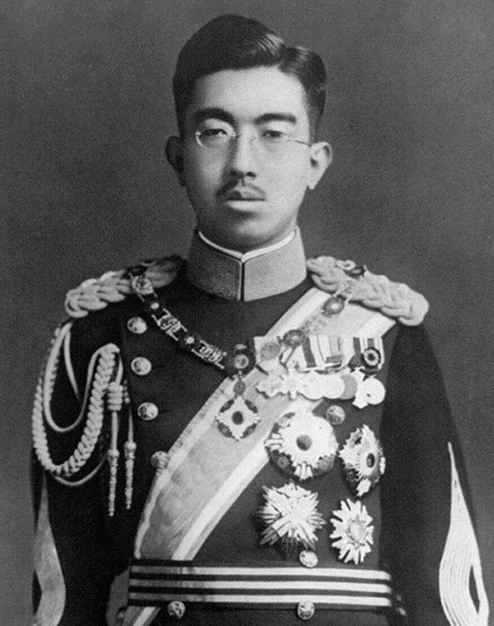

Sumber- Hirohito (1901–1989) Hirohito adalah Kaisar Jepang yang berkuasa selama Perang Dunia II dan transformasi Jepang menjadi negara modern. Ia memerintah Jepang selama 63 tahun (1926–1989), menjadikannya kaisar Jepang terlama dalam sejarah.
Nama lengkap: Hirohito (昭和天皇, Shōwa Tennō)
Lahir: 29 April 1901 di Tokyo, Jepang
Ayah: Kaisar Taishō
Naik takhta: 25 Desember 1926 setelah ayahnya meninggal
Masa pemerintahannya disebut Era Shōwa, yang berarti "Harmoni yang Terang"
1. Ekspansi Militer Jepang
Di bawah pemerintahannya, Jepang memperluas wilayah ke Tiongkok, Korea, dan Asia Tenggara Tahun 1941, Jepang menyerang Pearl Harbor, memulai konflik dengan AS
2. Kekalahan Jepang (1945)
Setelah bom atom dijatuhkan di Hiroshima dan Nagasaki, Jepang menyerah pada 15 Agustus 1945 Untuk pertama kalinya, Hirohito berbicara langsung ke rakyat melalui radio
3. Kehilangan Status "Dewa"
Setelah perang, Jepang diduduki AS, dan Hirohito dipaksa untuk mengakui bahwa ia bukan dewa Ini mengakhiri kepercayaan lama bahwa Kaisar Jepang adalah keturunan langsung Dewa Matahari
Jepang berubah menjadi negara demokrasi dengan ekonomi kuat Hirohito tetap menjadi kaisar tetapi hanya sebagai simbol negara tanpa kekuasaan politik Jepang tumbuh menjadi negara industri maju dan ekonomi terbesar kedua di dunia pada masanya.
Meninggal dunia: 7 Januari 1989
Digantikan oleh putranya, Akihito. Dikenang sebagai pemimpin yang membawa Jepang dari kehancuran perang ke kebangkitan ekonomi. Hirohito adalah figur kontroversial—ada yang melihatnya sebagai simbol imperialisme Jepang, tapi banyak juga yang menghormatinya sebagai pemimpin transformasi Jepang.